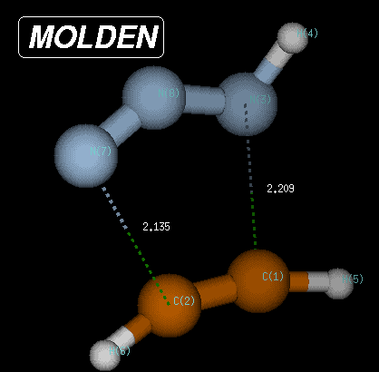
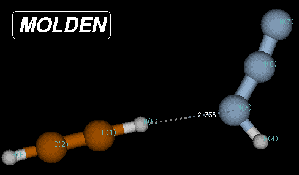
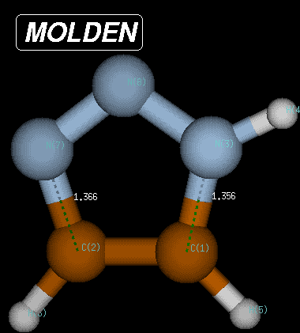

Using the Huisgen reaction (1,3-dipolar cycloaddition) of acetylene (C2H2)
with hydrazoic acid (HN3)
as an example, the IRC can be obtained in the following way.
First locate the transition state from a suitable starting point. Using the Becke3LYP/6-31G(d)
method, the transition state for this reaction has the following structure:
%chk=/scratch/test1.chk
#P Becke3LYP/6-31G(d) opt=(ts,calcfc,noeigen) iop(1/7=30)
test1 huisgen reaction of acetylene with hydrazoic acid
0 1
C,0,-1.3771962609,0.1115217682,-0.6026078698
C,0,-1.3547844383,0.1429486458,0.6298951916
N,0,0.7754880855,-0.014081296,-1.0816880575
H,0,1.3797222635,-0.512211,-1.7392823895
H,0,-1.6729711587,0.1366195734,-1.6271528399
H,0,-1.7282914142,0.203206455,1.6288787882
N,0,0.6973455417,-0.0461855327,1.1891862678
N,0,1.1576555877,-0.1332242445,0.1173350054

The transition state is characterized through C-N and C-N(H) bond distances of 2.135 and 2.209 Angstroms,
respectively, and has a Becke3LYP/6-31G(d) total energy of -242.080935 Hartree.
After transition state optimization, a copy of the checkpoint file containing the transition state structure is made
for the IRC calculations (e.g. test1ircf.chk). From this copy, the
forward IRC calculation is then initiated using the following input:
%chk=/scratch/test1ircf.chk
#P Becke3LYP/6-31G(d) scf=(tight,direct) int=finegrid
irc=(rcfc,forward,maxpoints=20,stepsize=10) geom=check
huisgen reaction of acetylene with hydrazoic acid
forward irc, 20 steps
0 1
The forward IRC will be followed in this case for 20 steps with a step
size of 10. The geometry is read from the checkpoint file with geom=check.
Progress in these calculations can be monitored using the UNIX grep command
on the string "POINTS" in the IRC output file. The number of local optimization
iterations per IRC point can be monitored grep'ing on the string "STEPS".
A large number of these cycles is an indication for either having a bad Hessian matrix or too
large a step size. In the current example the number of optimization cycles for each of the
IRC points varies between 1 and 3, a good sign for choosing a reasonable
step size. This step size is, however, not large enough to complete the IRC
within 20 steps and a second job with an additional 20 steps is therefore added with:
%chk=/scratch/test1ircf.chk
#P Becke3LYP/6-31G(d) scf=(tight,direct) int=finegrid
irc=(restart,forward,maxpoints=40,stepsize=10) geom=check
huisgen reaction of acetylene with hydrazoic acid
forward irc, steps 20 - 40
0 1
Please observe that the choice of "maxpoints" here includes the previous 20 as well as the additional
20 points. The IRC calculations continue in this particular case without
any problems until step
40 is reached and can be restarted for another 20 steps to reach overall 60 steps along the
IRC path.
Attempted restart for another 20 points then leads to convergence problems after overall 62 steps
and the job is aborted with the error message:
Optimization stopped.
-- Number of steps exceeded, NStep= 34
-- Flag reset to prevent archiving.
Despite this error message, Gaussian prints a summary of all points of the IRC
pathway optimized before including cartesian coordinates as well as the energies. Optimization problems
such as those encountered here occur frequently at the end of IRC calculations,
where the potential levels off before reaching the actual product or reactant minimum. In the current case the
last point on the IRC is located at C-N and C-N(H) bond distances of 3.0502
and 3.0548 Angstroms, respectively, and a Becke3LYP/6-31G(d) total energy of -242.108291 Hartree.
In order to identify the remaining structural and energetic differences between the last
IRC point and the following true minimum, it is good practice to optimized to
the next local minimum:
%chk=/scracth/test1ircf.chk
#P Becke3LYP/6-31G(d) opt geom=check iop(1/7=30)
huisgen reaction of acetylene with hydrazoic acid
forward irc, opt to min from last point on irc
0 1

In this case, the true minimum is located at a Becke3LYP/6-31G(d) total energy of -242.111452 Hartree,
80.1 kJ/mol below the transition state and 8.3 kJ/mol below the endpoint of the IRC
calculations. The structure of this reactant complex is characterized through very long C-N and C-N(H)
bond distances, but a short (C)H-N(H) distance of only 2.35 Angstroms. This structure shares little
similarity with most of the reaction pathway and is the result of the optimization of electrostatic
interactions between the two reactants.
The same procedure as described above can be followed for the reverse pathway.
The IRC algorithm works well for 55 points, when again the local geometry
optimization does not converge anymore. At this point the structure is characterized through C-N and C-N(H)
bond distances of 1.392 and 1.379 Angstroms, respectively, and a Becke3LYP/6-31G(d) total energy of
-242.220156 Hartree. Reoptimization of the last point on the IRC then leads
to the fully optimized product of the Huisgen reaction with a total energy of -242.222319 Hartree and
C-N and C-N(H) bond distances of 1.366 and 1.356 Angstroms, respectively. The reaction product is thus
371.2 kJ/mol more favorable than the transition state and 291.1 kJ/mol more favorable than the reactant
complex.

The occurence of oscillations during the constrained local optimizations are the most frequent
problems encountered in IRC calculations. These oscillations can,
to some extend, be avoided using smaller step sizes in combination with tighter convergence
criteria. In case the IRC algorithm continues to work until the
very end of the reaction pathway, the arrival at a minimum energy structure is indicated by
the message:
Minimum found on this side of the potential
Despite this optimistic claim, the final structure obtrained in IRC
calculations may still have gradients, which are substantially larger than acccepted for true
minimum energy
structures. It is therefore a good practice to subject the IRC
end point structures to a standard geometry optimization procedure.
last changes: 16.10.2004, HZ questions & comments to: zipse@cup.uni-muenchen.de